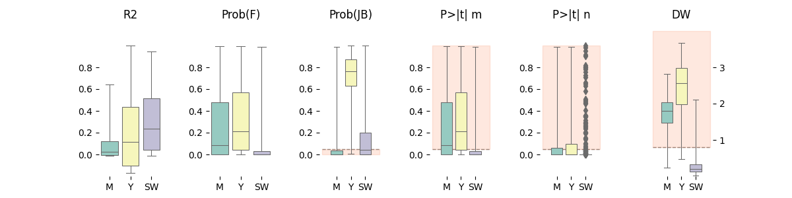

Note
Click here to download the full example code
Table Boxplot¶
Example using your package
Out:
Data:
org abx sari sart r2 f_prob jb jb_prob ptm ptn dw surveillance
0 ABAU AAMI 0.390642 -0.005000 0.181 2.940000e-05 4.648 9.790000e-02 0.000 0.000 1.177 M
1 ABAU AAMO 0.960317 -0.001200 0.053 1.940000e-02 631.965 5.900000e-138 0.019 0.000 1.848 M
2 ABAU AAUG 0.757757 -0.000800 -0.004 4.240000e-01 13.083 1.440000e-03 0.424 0.000 1.640 M
3 ABAU AAZT 0.970588 -0.000900 0.057 1.560000e-02 129.263 8.530000e-29 0.016 0.000 1.604 M
4 ABAU ACAZ 0.941748 -0.000700 0.015 1.320000e-01 103.616 3.160000e-23 0.132 0.000 1.776 M
... ... ... ... ... ... ... ... ... ... ... ... ...
1726 SSAP AGEN 0.002611 -0.000063 0.027 7.210000e-02 40.688 1.460000e-09 0.072 0.004 0.180 SW
1727 SSAP AMET 0.289655 0.003800 0.539 5.100000e-16 2.913 2.330000e-01 0.000 0.000 0.115 SW
1728 SSAP ANIT 0.011775 -0.000200 0.418 1.070000e-11 3.205 2.010000e-01 0.000 0.000 0.443 SW
1729 SSAP APEN 0.849445 -0.000500 0.042 3.240000e-02 5.323 6.980000e-02 0.032 0.000 0.308 SW
1730 SSAP ATRI 0.060847 -0.000017 -0.011 8.020000e-01 0.007 9.970000e-01 0.802 0.000 0.316 SW
[1731 rows x 12 columns]
7 8 9 10 11 12 13 14 15 16 17 18 19 20 21 22 23 24 25 26 27 28 29 30 31 32 33 34 35 36 37 38 39 40 41 42 43 44 45 46 47 48 49 50 51 52 53 54 55 56 57 58 59 60 61 62 63 64 65 66 67 68 69 70 71 72 73 74 75 76 77 78 79 80 81 82 83 84 85 86 87 88 89 90 91 92 93 94 95 96 97 98 99 100 101 102 103 104 105 106 107 108 109 110 111 112 113 114 115 116 117 118 119 120 121 122 123 124 125 126 127 128 129 130 131 132 133 134 135 136 137 138 139 140 141 142 143 144 145 146 147 148 149 150 151 152 153 154 155 156 157 158 159 160 161 162 163 164 165 166 167 168 169 170 171 172 173 174 175 176 177 178 179 180 181 182 183 184 185 186 187 188 189 190 191 192 193 194 195 196 197 198 | # Libraries
import numpy as np
import pandas as pd
import seaborn as sns
import matplotlib.pyplot as plt
import matplotlib.gridspec as gridspec
from matplotlib import colors
# -----------------------------------------------------------
# Helpers
# -----------------------------------------------------------
def hlinebgplot(ax, right, yv, bg=None):
"""This function adds a vertical line and background
Parameters
----------
Returns
-------
"""
# Plot line
ax.plot((-1, right), (yv, yv), color='gray',
linestyle='--', linewidth=1, zorder=0)
# Plot background.
if bg is not None:
cb = sns.color_palette("Set2", 10)[1]
ax.fill_between([-1, right], [yv, yv], [bg, bg],
zorder=0, alpha=0.2, color=cb)
# -------------------
# PLOTTING SETTINGS
# -------------------
# Configuration for each columns
info_sari = {
'cmap':'Reds',
'title':'SARI',
'xlim':[-0.1, 1.1],
'xticks':[0, 1],
}
info_sart = {
'cmap':'RdBu_r',
'title':'SART',
'xlim':[-1.2, 1.2],
'xticks':[-1, 1],
}
info_r2 = {
'cmap':'YlGn',
'title':'R2',
'ylim': [-0.2, 1.2],
'yticks': [.0, .2, .4, .6, .8 ]
}
info_fprob = {
'name':'f_prob',
'title':'Prob(F)',
'ylim': [-0.2, 1.2],
'yticks': [.0, .2, .4, .6, .8 ]
}
info_jb_prob = {
'cmap':'YlGn',
'title':'Prob(JB)',
'ylim': [-0.2, 1.2],
'hline': [{'yv':0.05, 'bg':0.0}],
'yticks': [.0, .2, .4, .6, .8 ]
}
info_dw = {
'cmap':'YlGn_r',
'title':'DW',
'hline': [{'yv':0.8, 'bg':4.0}],
'ylim': [-0, 4.2],
'yticks': [1, 2, 3]
}
info_slope = {
'name':'x1_tprob',
'cmap':'YlGn_r',
'title':'P>|t| m',
'hline': [{'yv':0.05, 'bg':1.0}],
'ylim': [-0.2, 1.2],
'yticks': [.0, .2, .4, .6, .8 ]
}
info_coefficient = {
'name':'c_tprob',
'cmap':'YlGn_r',
'title':'P>|t| n',
'hline': [{'yv':0.05, 'bg':1.0}],
'ylim': [-0.2, 1.2],
'yticks': [.0, .2, .4, .6, .8 ]
}
# Now we combine all of them together. Note
# that the key value corresponds to the name
# of the column it should be applied to.
info = {
'sari': info_sari,
'sart': info_sart,
'dw': info_dw,
'r2': info_r2,
'jb_prob': info_jb_prob,
'ptm': info_slope,
'ptn': info_coefficient,
'f_prob': info_fprob
}
# -------------------------------------------
# Main
# -------------------------------------------
# Path
path = '../../pyamr/datasets/other/susceptibility_full.csv'
# Rename
rename = {
'organismCode': 'org',
'antibioticCode': 'abx',
'sari': 'sari',
'x1_coef': 'sart',
'adj_rsquared': 'r2',
'f_prob': 'f_prob',
'jarque-bera': 'jb',
'jarque_bera_prob': 'jb_prob',
'x1_tprob': 'ptm',
'c_tprob': 'ptn',
'durbin-watson': 'dw',
'surveillance': 'surveillance'
}
# Create data
data = pd.read_csv(path)
data = data[rename.keys()]
data = data.rename(columns=rename)
# Show
print("\nData:")
print(data)
# -------------------------------------------
# Pair Grid
# -------------------------------------------
# Features
statistics = ['r2', 'f_prob', 'jb_prob', 'ptm', 'ptn', 'dw']
# Create figure
f, axes = plt.subplots(1, len(statistics), figsize=(12, 3))
axes = axes.flatten()
# Plot strips and format axes
for ax, c in zip(axes, statistics):
# Get information
d = info[c] if c in info else {}
# Plot distributions
sns.boxplot(x='surveillance', y=data[c],
ax=ax, data=data, whis=1e30,
palette="Set3", linewidth=0.75)
# Plot horizontal lines
for e in d.get('hline', []):
hlinebgplot(ax, right=3, **e)
# Configure axes
ax.set(title=d.get('title', c),
xlabel='', ylabel='',
ylim=d.get('ylim', None),
yticks=d.get('yticks', ax.get_yticks()))
#ax.tick_params(axis='y', which='both', length=0)
ax.xaxis.grid(False)
ax.yaxis.grid(False)
# Despine
sns.despine(bottom=True, left=True)
# Change last ticks to right
axes[-1].yaxis.tick_right()
# Adjust space (overwritten by tight)
plt.subplots_adjust(wspace=0.75)
# Configure layout
#plt.tight_layout()
# Show
plt.show()
|
Total running time of the script: ( 0 minutes 0.752 seconds)